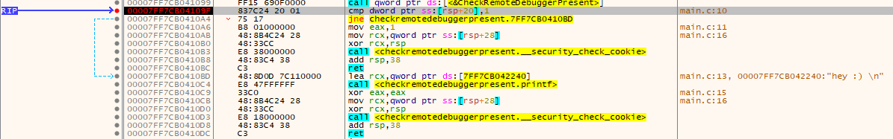
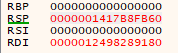
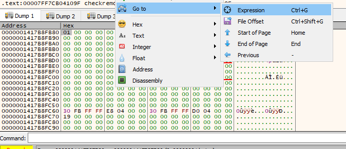
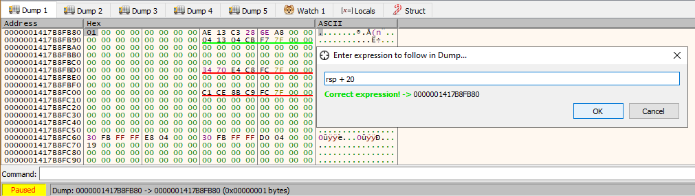
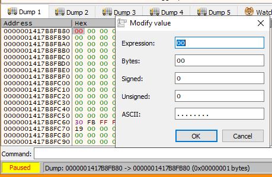
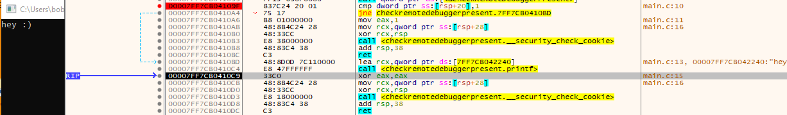

# CheckRemoteDebuggerPresent
Another winAPI function.
It checks if there's a debugger running in a separate parallel process.
If you want to check whether your calling process is running under the debugger, use
IsDebuggerPresent.
If a debugger exists, the function will set the value pointed to by
pbDebuggerPresent to
0xffffffff(source:
https://ctf-wiki.github.io/ctf-wiki/reverse/windows/anti-debug/checkremotedebuggerpresent)Internally this function calls
NtQueryInformationProcess(source:
https://ctf-wiki.github.io/ctf-wiki/reverse/windows/anti-debug/checkremotedebuggerpresent)•
https://docs.microsoft.com/en-us/windows/win32/api/debugapi/nf-debugapi-checkremotedebuggerpresent•
https://www.aldeid.com/wiki/CheckRemoteDebuggerPresent## Code
#include <stdio.h>
#include <Windows.h>
int main()
{
BOOL b_ret = FALSE;
BOOL debugger_present = FALSE;
b_ret = CheckRemoteDebuggerPresent(GetCurrentProcess(), &debugger_present);
if (debugger_present == TRUE)
return 1;
printf("hey :) \n");
return 0;
}
## Bypass
cmp rsp+20 to
1 is the
CheckRemoteDebuggerPresent check.
The next instruction,
jne - jump if not equal - will jump to our
printf("hey :) \n") code if the value at
rsp+20 is not equal to 1.
The value in RSP is
0000001417B8FB60We want to look at this in the dump.
Right click in the dump > Go to > Expression
Enter
rsp + 20 and hit OK
We see the dump jump to
0000001417B8FB80The value is
011 is equal to
1, meaning that the jump to our
printf code won't happen.
Double click
01 and modify it to
00If we F8 (step over) our code, we'll see the jump to our
printf is taken and we've bypassed
CheckRemoteDebuggerPresent